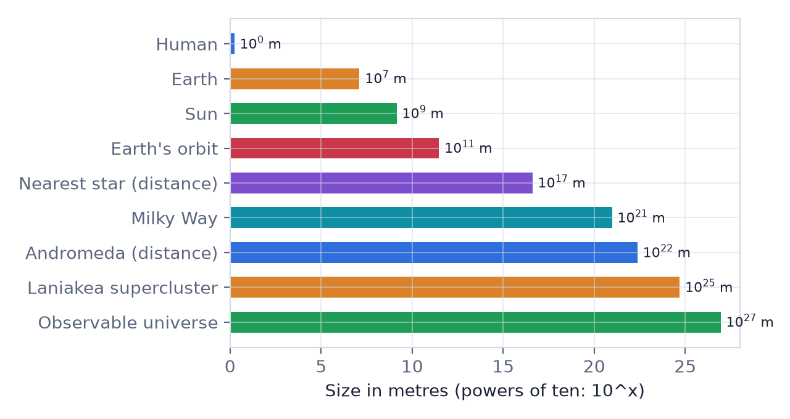

In this lesson you will learn
|
What is cosmology?
Cosmology is the science of the universe as a whole: what it contains, how it is arranged, how it began and how it changes over time. Astronomy studies individual objects such as planets, stars and galaxies; cosmology steps back and asks questions about the entire cosmos.
Before we can talk about the expansion of the universe or the Big Bang, we need a feeling for how big things are. Cosmic sizes are so extreme that everyday units and intuition break down. Our first tool is therefore a way of writing numbers.
Powers of ten
Instead of writing 1 000 000 we write : a 1 followed by six zeros. Small numbers use negative exponents: . A number such as 150 000 000 000 metres becomes
This is called scientific notation. Each step of one in the exponent is a
factor of ten, so  is ten times bigger than
is ten times bigger than  , not "a bit"
bigger.
, not "a bit"
bigger.
Multiplying is adding exponents To multiply powers of ten, add the exponents: . To divide, subtract them: . This makes rough estimates of cosmic quantities quick and easy. |
A ladder of sizes
The chart below shows some landmarks on a logarithmic scale, where every step to the right is a factor of ten.

| Object | Approximate size | Power of ten |
|---|---|---|
| A human | 1.7 m | m |
| Earth (diameter) | 12 700 km | |
| Sun (diameter) | 1.4 million km | |
| Earth–Sun distance | 150 million km | |
| Distance to the nearest star | 4.2 light-years | |
| The Milky Way galaxy | about 100 000 light-years | m |
| Distance to the Andromeda galaxy | 2.5 million light-years | m |
| Largest structures (superclusters) | hundreds of millions of light-years | |
| The observable universe | about 93 billion light-years | m |
From a human to the observable universe spans 27 powers of ten. If the Sun were the size of a grain of sand, the nearest star would be another grain about 30 km away, and the Milky Way would be as wide as the orbit of the Moon.
Space is mostly empty Stars are tiny compared with the distances between them. Galaxies, on the other hand, are relatively close to each other compared with their sizes: Andromeda is only about 25 Milky Way diameters away. This is why galaxies often collide, but stars inside them almost never do. |
Try it: Powers of Ten Zoom Zoom from a human to the observable universe and watch each object appear at its true scale. |
Hierarchy of cosmic structure
The universe is organised in a hierarchy:
- Stars like the Sun, often with planets.
- Galaxies, systems of up to hundreds of billions of stars, gas and dust bound together by gravity.
- Groups and clusters of galaxies. The Milky Way belongs to the Local Group with Andromeda and dozens of smaller galaxies.
- Superclusters and the cosmic web: long filaments of galaxies surrounding huge, nearly empty voids.
On the very largest scales, above a few hundred million light-years, the universe looks roughly the same everywhere. This observation will become a key principle of cosmology in Level 1.
Looking far means looking back
Light travels fast, about 300 000 km every second, but not infinitely fast. Light from the Sun takes about 8 minutes to reach us, so we see the Sun as it was 8 minutes ago. We see the Andromeda galaxy as it was 2.5 million years ago.
A cosmic time machine The farther away we look, the further back in time we see. By observing very distant galaxies, astronomers can directly watch the universe as it was billions of years ago. This is one of the most powerful tools in cosmology. |
Remember this
|